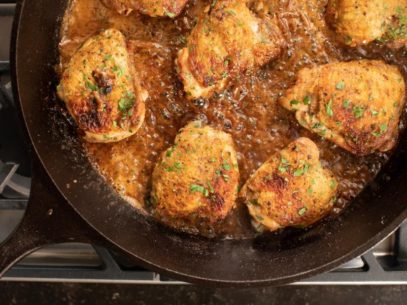

Chicken Thighs with Creamy Mustard Sauce

Description:-
Chicken Thighs are the unsung hero of weeknight dinners; they're inexpensive, versatile and delicious.
In this recipe, Ina proves that they don't need much to become a delicious, crowd-pleasing meal.
Ingredients:-
- 8 medium bone-in, skin-on chicken thighs (2 1/4 pounds)
- Kosher salt and freshly ground black pepper
- good olive oil
- 2 cups halved and thinly sliced yellow onions (2 onions)
- 2 tablespoons dry white wine
- 8 ounces creme fraiche
- 1 tablespoon good Dijon mustard
- 1 teaspoon whole-grain mustard
- 1 tablespoon chopped fresh parsley
Directions:-
- Place the chicken thighs on a cutting board, skin side up, and pat them dry with paper towels.Sprinkle the chicken
with 1 1/2 teaspoons salt and 3/4 teaspoon pepper. Turn them over and sprinkle them with one more teaspoon of salt.
- Heat 1 tablespoon olive oil in a large (11 to 12-inch) cast-iron skillet over medium heat. When the oil is hot,
place the chicken in the pan in one layer, skin side down. Cook over medium heat for 15 minutes without moving,
until the skin is golden brown. (If the skin gets too dark, turn the heat to medium low.) Turn the chicken pieces with tongs,
add the onions to the pan, including under the chicken, and cook over medium heat for 15 minutes, stirring the onions occasionally,
until the thighs are cooked to 155 to 160 degrees and the onions are browned. Transfer the chicken (not the onions)
to a plate and allow to rest uncovered while you make the sauce. If the onions aren't browned, cook them for another minute.
- Add the wine, creme fraiche, Dijon mustard, whole-grain mustard, and 1 teaspoon salt to the skillet and stir over medium heat for one minute.
Return the chicken, skin side up, and the juices to the skillet, sprinkle with parsley, and serve hot.